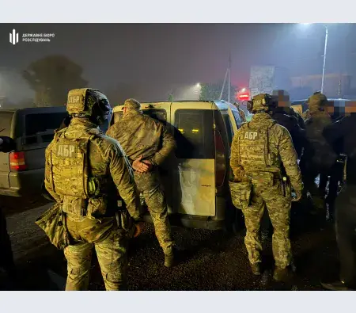
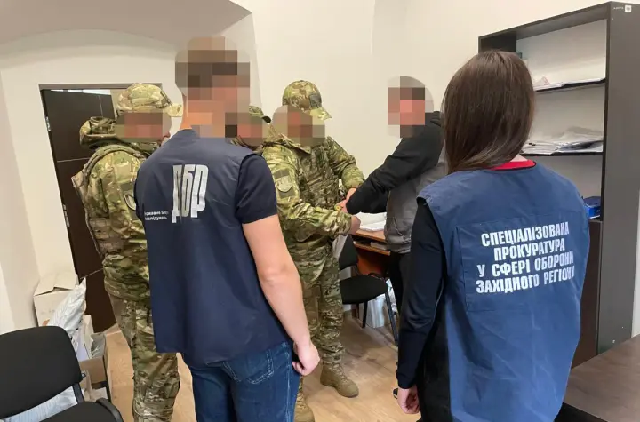
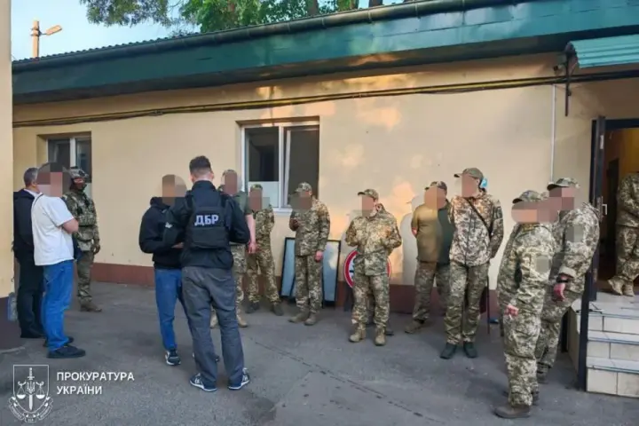

10월 30일. 부코비나 주에서 지역 징병지원센터 소속 군인 5명과 경찰관 1명이 징집병 고문, 불법 감금, 부당 이득 수수 혐의로 구금

10월 20일. 르비우 지역 모병센터 소속 군인이 징병군인을 폭행해 중상을 입히고 사망에 이르게 한 혐의로 해당 군인을 체포

10월 14일. 오데사에서 지역모집센터 직원 9명이 불법 감금, 납치, 고문 혐의로 유죄 판결
물론 사건의 발단이 된 키예프 뉴스는 거짓일 가능성이 높음
하지만 납치 감금 고문은 실화였고...

납치는 알겠는데 고문은 왜함? 카오스마린임?